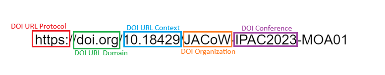
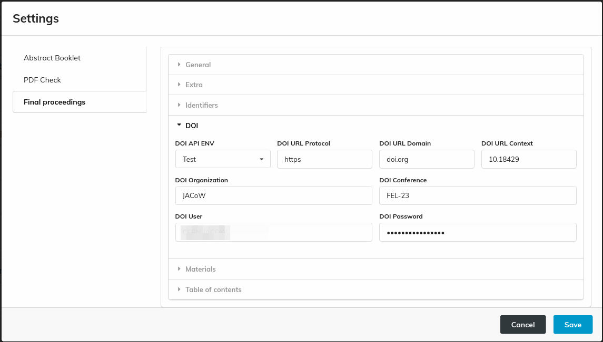
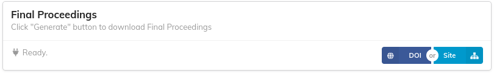
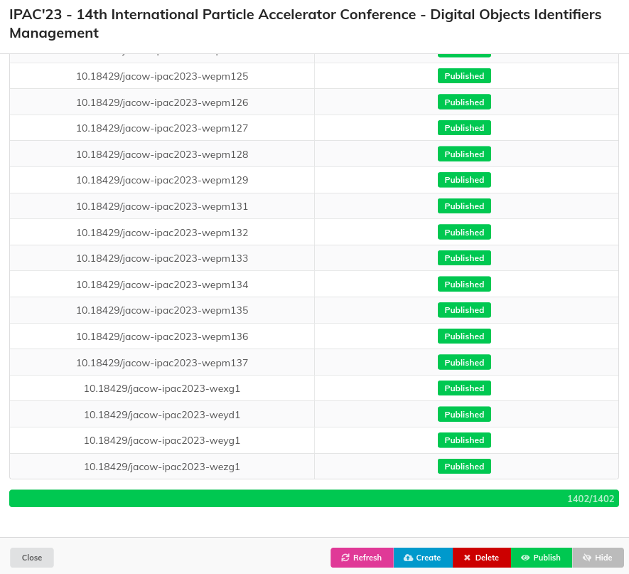

Digital Object Identifiers (DOI)
DOIs are managed by the JACoW Proceedings Webmaster
Only the JACoW Proceedings Manager can register and publish DOIs on DOI.org. The Editor-in-Chief is responsible for correctly creating the final proceedings package to be hand-over to the JACoW Proceedings Webmaster. They will then check the package, publish the proceedings and register the DOIs on behalf of the Editor-in-Chief. Hence, you can normally skip this documentation page.
Papers in the IPAC proceedings are given a unique DOI built from the PURR settings and the paper's programme code:

The various bits of the DOI URL are set in the PURR configuration panel:

DOIs are registered by CAT via Datacite by way of the DOI button in PURR's interface:

Datacite credentials are needed to actually register the DOIs. Contact the JACoW Board of Directors to get directions about these settings.
Registering DOIs with CAT
When the final proceedings package has been created and sent to the JACoW Proceedings Webmaster for publication, it's time to register the DOIs on doi.org.

Upon opening this window CAT allows to operate on Datacite.org.
The left column lists the DOI codes created by CAT for all publishable papers. The syntax follows the parameters in the PURR settings.
The right column shows each DOI status on DOI.org via Datacite.org.
Note: in case the final proceedings haven't been created yet or before registering the DOIs (with the Create action here below) the status shown is:
Not Found - The resource is not found.
Check that final proceedings have been generated correctly.
The buttons at the bottom of this window trigger some actions:
-
Login: checks that CAT can correctly login (and, hence, operate) on Datacite.org
-
Refresh: forces a refresh of the list above by querying Datacite.org.
-
Create: Registers the whole DOIs dataset via Datacite. By default the newly registered DOIs are hidden.
-
Delete: De-registers the whole DOIs dataset. Only unpublished DOIs can be deleted. Once they're published, the can only be hidden.
-
Publish: Makes the DOIs visible and searchable on doi.org.
-
Hide: Makes published DOIs invisible and not searchable.
Creating DOIs
The first action to perform before sending the final proceedings for publication is creating the DOIs on doi.org. When the Editor-in-Chief is happy with the final proceedings, they can open the DOI panel in CAT and Create them by way of the button named accordingly. The following video shows this operation, starting from the situation where no DOIs where registered to the registered status.
After the DOIs are created they exist in DOI.org but they are not visible nor searchable by the end users.
Publishing DOIs
After the DOIs are registered with no problems, they can be published. Again, to easily perform this action the Editor-in-Chief can use the "Publish" button in CAT, as the following video shows.
Please remember that this action is final: after a DOI is published it cannot be deleted anymore. What is possible to do is to hide it, if needed, which can also be performed through CAT.
To modify the data associated with a DOI it is necessary to use the DataCite Fabrica backend, which is only available to the JACoW BoD.